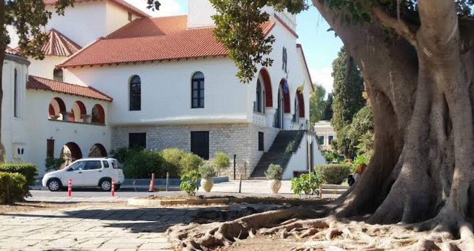

Gebouw
Na de aardbeving van 1933 moesten delen hersteld worden, maar het gebouw bleef grotendeels overeind. Binnen is een houten iconostase uit de jaren 1970 en veel licht door brede ramen, in de trant van de Italiaanse bouw uit die tijd.

Zetel van de metropool van Kos en Nisyros. Na de Tweede Wereldoorlog werd het gebouw een orthodoxe kathedraal, gewijd aan de Aankondiging (Evangelismos).
Na de aardbeving van 1933 moesten delen hersteld worden, maar het gebouw bleef grotendeels overeind. Binnen is een houten iconostase uit de jaren 1970 en veel licht door brede ramen, in de trant van de Italiaanse bouw uit die tijd.
Vaak open, soms dicht wegens onderhoud of een feestdag. Mensen steken een kaars aan of kijken alleen even binnen. De katholieke kerk is een ander gebouw.